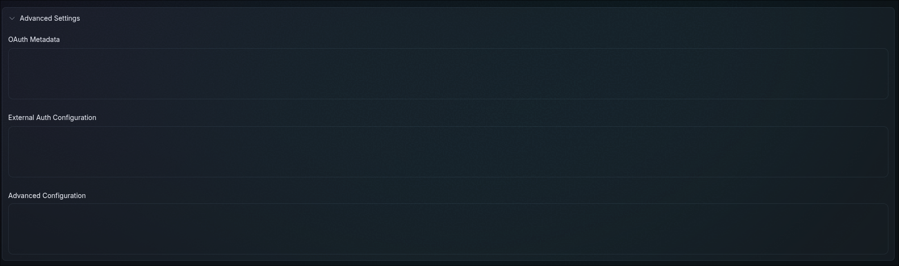

MCP Registry and the Add MCP Server wizard
The MCP Registry tab, the two-step Add MCP Server wizard, every field on the integration details form, all four authentication options as a tenant renders them, and what the three Advanced Settings boxes are and are not known to accept
What this covers
This page documents the MCP Registry and the Add MCP Server wizard field by field, as a Strata Cloud Manager tenant renders them. The screenshots were captured on 2026-11-18, so the labels, the placeholders, the defaults and the order of the controls are what the product draws rather than what a product page describes.
Registering a server is the first of several decisions before a developer can call a tool through the gateway. Configuration chapter 10 owns the rest, and it stays the short path through the whole feature. This page is the depth behind its first step.
- Client, gateway and server model — the two authentication layers and why the upstream credential never reaches a user.
- Upstream authentication in concept — which option suits which kind of server, including the OAuth apps that have to be created by hand.
- User identity forwarding — the three methods for servers that enforce their own per-user authorization.
- Tool provisioning — the Capabilities tab, which decides whether a tool exists at all.
- Rate limits and guardrails — tool call rate limits and guardrails on tool inputs and outputs.
- The three access levels — organization, workspace and user.
Prerequisites
Collect all five before opening the wizard. The form holds no draft state, and a server saved with a guessed URL or a guessed slug is harder to correct than one that was never created.
- Org Admin or Org Owner — the registry is an organization-level surface, and adding a server and provisioning workspaces both need one of these roles. Configuration chapter 4 covers the role model.
- At least one workspace — step 2 of the wizard asks which workspaces receive the server, and a tenant with no workspace has nothing to offer there. Configuration chapter 8 creates one.
- The server URL — the MCP endpoint of the server itself, reachable over HTTP from the gateway.
- The transport the server speaks — Streamable HTTP or SSE. The wizard asks, and nothing on the form detects it for you.
- The upstream credential — a client ID and secret for a token endpoint, or a header name and value, depending on which authentication option the server requires. A server using per-user OAuth needs no credential collected in advance, because each user signs in.
- The gateway key type the consumers hold — a Service key cannot reach a server registered as
OAuth 2.1. Settle this before registering such a server, because the key type cannot be changed after issue. OAuth 2.1 carries the compatibility table.
The gateway proxies remote servers over HTTP, so a local STDIO server has to be exposed as an HTTP endpoint first, and that endpoint is what gets registered. Chapter 10 states this alongside the version floor for MCP rate limits, which is gateway 2.18.0 and backend 1.24.0.
The registry
The registry is the organization-wide catalog of MCP servers. Everything a workspace can reach later has to exist here first. Find it at AI Security → AI Gateway → Integrations → MCP Registry.
The page title reads Integrations with the subtitle Configure and manage your AI models and services., and it carries four tabs:
| Tab | What it holds |
|---|---|
| LLM Integrations | Model provider integrations, covered by the provider integration set. |
| MCP Registry | MCP servers. This page. |
| Secret References | Vault-backed credential references. |
| Agent Integrations | Agent integrations, outside the scope of this set. |
Configuration chapter 3 describes Secret References as living in the admin panel, and the tenant puts it on this page beside MCP Registry. Look here first when a secret reference cannot be found. The provider integration pages have been corrected to match.
- Go to AI Security → AI Gateway → Integrations.
- Select the MCP Registry tab.
- Check the workspace selector at the top left, which names the workspace context the page is being read in.
Four controls sit above the list: a Search... box, a Type dropdown, a Created in workspace dropdown, and a Reset link. Below them a count reads Total MCP Servers (n), with + Add MCP Server on the right.
The table carries seven columns in this order:
| Column | Holds |
|---|---|
| MCP Server Name | The display name set in step 1 of the wizard. |
| Slug | The identifier that forms part of the connection URL. |
| Type | The value the Type filter above the list matches on. |
| Status | The server state reported by the registry. |
| Creator | The administrator who added the server. |
| Workspaces | How many workspaces the server is provisioned to. |
| Last Updated | When the registration last changed. |
An empty registry on a tenant with no servers yet:
![The Integrations page in Strata Cloud Manager with the MCP Registry tab active. A workspace selector reading Default Workspace sits at the top left beside a breadcrumb of AI Security, AI Gateway, Integrations and MCP Registry. The page title Integrations carries the subtitle Configure and manage your AI models and services, and four tabs read LLM Integrations, MCP Registry, Secret References and Agent Integrations. Below them a Search box, a Type dropdown, a Created in workspace dropdown and a Reset link filter a list headed Total MCP Servers (0), with a blue Add MCP Server button on the right. The empty table shows seven column headings: MCP Server Name, Slug, Type, Status, Creator, Workspaces and Last Updated.](../aigw-screenshots/aigw-mcp-registry-tabs.png)
The captured tenant held no servers, so no populated row was observed in this pass. What the Type column reports, and whether Status reflects a reachability probe against the server or only a configuration state, are both open. A registry that shows a healthy status for an unreachable server is a very different operational story from one that probes, so confirm the behavior in your own tenant before presenting the column as a health signal.
The MCP Registry tab is active, the count reads Total MCP Servers (n) for the number of servers the organization already holds, and + Add MCP Server is present. A missing button means the signed-in administrator lacks the organization-level role.
Step 1, integration details
+ Add MCP Server opens a wizard titled Add MCP Server, subtitled Follow the steps to add a server. The rail on the left lists two steps:
- MCP Integration Details
- Workspace Provisioning
The primary button reads Next: Choose Workspace, with Cancel at the right of the same bar.
The Add LLM Integration wizard runs Select A Provider, Integration Details, Workspace Provisioning and Model Provisioning. The MCP wizard has no provider picker and no model provisioning stage, because an MCP server exposes tools rather than models. Which tools exist is set after the server is created, on the Capabilities tab that chapter 10 covers.
Four fields sit at the top of the form. URL and Slug share one row, with URL on the left.
| Field | Required | Placeholder | What to enter |
|---|---|---|---|
| Name | Yes, marked * | Enter | The display name teams see in the registry and on their workspace MCP page. |
| Short Description | No, labeled (Optional) | Enter | One line on what the server is for. Developers browsing the workspace read this before anything else. |
| URL | Yes, marked * | Enter | The MCP endpoint of the server itself. |
| Slug | Not marked required | Enter | The identifier that becomes part of every client configuration. |
Chapter 10 builds the connection URL from it as https://aigw.portkey.ai/m/{slug}/mcp. Changing the slug later breaks every client until each one is edited, so choose it as deliberately as a hostname. The field is not marked with an asterisk, which makes it easy to tab past on a form where URL beside it is marked required.
URL is the server's own endpoint. Slug is a short identifier of your choosing. Pasting the endpoint into both produces a registration that looks complete and a connection URL no client can use.
Name and URL hold values, the slug matches a convention you have written down, and Next: Choose Workspace is active. The full form, with the remaining sections below these fields, is shown under OAuth 2.1.
Below these fields the form continues with Server Type, Passthrough headers, Authentication and a collapsed Advanced Settings section. The Authentication control offers four options, each covered in its own section on this page:
| Option | Fields it exposes | Covered in |
|---|---|---|
| OAuth 2.1, the default | None. Each user signs in to the upstream service individually. | OAuth 2.1 |
| OAuth Client Credentials | Token Endpoint, Client ID, Client Secret, Scope | OAuth client credentials |
| None | None | None |
| Headers | Header and string pairs | Headers |
Chapter 10 names the endpoint field Server URL, gives Server Type the value Http, calls the authentication control Auth Type, and ends the step with a Test Connection button followed by Add Server. The tenant captured for this page renders a two-step wizard whose field is URL, whose Server Type offers Streamable HTTP and SSE, and whose only buttons are Next: Choose Workspace and Cancel. No Test Connection control appeared anywhere on step 1. Where the two descriptions disagree, the screenshots on this page are the later observation.
Server type
Server Type is a two-option segmented control rather than a pair of radio cards. Streamable HTTP is selected by default and carries a check mark while it is active.
- Leave
Streamable HTTPselected for a server that speaks the Streamable HTTP transport. - Click
SSEfor a server that exposes a Server-Sent Events endpoint. The check mark moves toSSE.
The helper text under the control reads, verbatim:
Recommended for most integrations. Supports streaming responses over standard HTTP connections.The same control with SSE selected, helper text unchanged:
![Step 1 of the Add MCP Server wizard with the Server Type segmented control switched to SSE, which now carries the check mark while Streamable HTTP is greyed. The helper text below the control still reads Recommended for most integrations, supports streaming responses over standard HTTP connections. The Name, Short Description, URL and Slug fields above are empty, the Passthrough headers section below shows one empty Passthrough Headers and Passthrough String row with an Add Header link, and the Authentication section shows four radio cards with OAuth 2.1 selected.](../aigw-screenshots/aigw-mcp-add-server-sse.png)
That sentence stays identical when SSE is selected, so it reads as advice about Streamable HTTP rather than about whichever option is active. Do not quote it to a customer as a description of SSE.
The check mark sits on the transport the server owner confirmed. Nothing on the form detects the transport, and a mismatch is accepted at save time, so this is the field to re-read first when a registered server never connects.
Passthrough headers
The section is titled Passthrough headers (Optional) and described as Add custom HTTP headers to forward with every request to the MCP server. It holds two columns, Passthrough Headers with the placeholder Enter Header and Passthrough String with the placeholder Enter String, a bin icon at the end of each row, and a + Add Header link below.
Leave the section empty unless the server requires a header that is not its credential. A tenant identifier, an API version pin or a routing header belongs here.
- Type the header name into
Passthrough Headers. - Type its value into
Passthrough String. - Click
+ Add Headerfor each further pair, and use the bin icon to remove a row.
These headers are forwarded on every request to the server regardless of which authentication option is selected, so a passthrough header survives a later change from Headers to OAuth 2.1 and keeps being sent.
This section and the Headers authentication option both take header and value pairs, and they do different jobs. Passthrough headers are forwarded whatever the authentication type. The Headers authentication option is the credential the gateway presents to the server, and it uses the labels Headers and String rather than Passthrough Headers and Passthrough String. Putting the credential in the passthrough section leaves the server with an authentication option that carries no credential, and the form accepts it.
Every row you filled sits under the heading Passthrough headers (Optional) and above the Authentication section, and the credential for the server is not among them.
OAuth 2.1
The Authentication section is described as Select how your MCP client authenticates with the server. and holds four radio cards. OAuth 2.1 is the leftmost card and the default selection.
Selecting OAuth 2.1 adds no fields at all. No token endpoint, no client ID, no secret, no scope. The form below the cards stays exactly as it was, and Next: Choose Workspace stays active.
The option is per-user OAuth. Each user gets their own connection to the upstream service and signs in individually, so no operator-supplied credential exists for the form to collect. One person's access to the server is separate from another's, and the upstream service sees each of them as themselves.
- Leave
OAuth 2.1selected, or click the card if another option was chosen earlier. - Enter nothing. The card exposes no input.
Step 1 with the default selection, showing the whole form:
![Step 1 of the Add MCP Server wizard, titled Add MCP Server with the subtitle Follow the steps to add a server. A rail on the left numbers two steps, MCP Integration Details and Workspace Provisioning, with step 1 active. The form shows a required Name field, an optional Short Description, a required URL beside an unmarked Slug on the same row, a Server Type segmented control with Streamable HTTP check-marked and SSE beside it, a Passthrough headers section with one empty header and string row, and an Authentication section whose four radio cards read OAuth 2.1, OAuth Client Credentials, None and Headers. OAuth 2.1 is selected and no fields appear beneath it. A collapsed Advanced Settings row sits at the bottom, above a Next: Choose Workspace button and a Cancel button.](../aigw-screenshots/aigw-mcp-add-server-oauth21.png)
Per-user OAuth constrains which gateway API key can reach the server, and the constraint applies to this option alone:
| MCP server authentication | Service key | User key |
|---|---|---|
| None, Custom Headers, Client Credentials | Works | Works |
| OAuth 2.1, per-user | Does not work | Works |
A Service key is tied to nobody, and per-user OAuth has nobody to sign in. A call made with a Service key against a server registered as OAuth 2.1 fails, typically as HTTP 500 with Unable to verify user access. Issuing a User key instead is the fix, and the key type cannot be changed after issue: moving a consumer from a Service key to a User key means a new key and a redeploy of whatever holds it.
The key type is chosen on the Security Keys page, and Identity and clients sets out the Service and User distinction in full. This is the first hard consequence of that choice: pick Service keys for a workspace and every per-user OAuth server is unreachable from it.
A gateway API key that works for model calls is refused on a tool call when mcp.invoke is absent. The permission is set on the key, under Settings → API Keys, and chapter 10 names the same requirement as MCP Invoke. The failure arrives at the first tool call rather than at connection time, which sends people looking at the server registration instead of the key.
Per-user OAuth registers the gateway as an OAuth client automatically. Services that do not allow that, Snowflake and anything fronted by Okta or Entra ID among them, return Incompatible auth server: does not support dynamic client registration. Pre-register an OAuth client with the service and supply it through Advanced Configuration. Chapter 10 covers the same case for GitHub.
The OAuth 2.1 card shows its radio filled and no input appears between the cards and the Advanced Settings row. Before handing the server to anyone, confirm that the key they will use is a User key carrying mcp.invoke, because a Service key fails on this option however correct the registration is.
OAuth client credentials
OAuth Client Credentials is the second card. Selecting it opens four fields below the row of cards, and every value comes from the authorization server rather than from the MCP server. Use it for service accounts and shared resources, where one token covers all users.
- Click the
OAuth Client Credentialscard. - Fill the four fields in the order the form renders them.
| Field | Required | Placeholder | Value |
|---|---|---|---|
| Token Endpoint | Yes | https://auth.example.com/oauth2/token | The token endpoint of the authorization server. |
| Client ID | Yes | Enter Client ID | The client ID of the client credentials client. |
| Client Secret | Yes | Enter Client Secret | The client secret for that client. |
| Scope | No, labeled (optional) | e.g. mcp.read mcp.write | The scope the client is allowed to request. Leave empty where the server does not require one. |
The four fields the card opens:
![Step 1 of the Add MCP Server wizard scrolled to the Authentication section, with the OAuth Client Credentials card selected and highlighted among the four cards OAuth 2.1, OAuth Client Credentials, None and Headers. Four fields appear below the cards: Token Endpoint showing the placeholder https colon slash slash auth dot example dot com slash oauth2 slash token, Client ID showing Enter Client ID, Client Secret showing Enter Client Secret, and Scope labeled optional showing the placeholder e.g. mcp.read mcp.write. The Server Type control and the Passthrough headers section are visible above, and a collapsed Advanced Settings row sits below, with Next: Choose Workspace and Cancel at the bottom.](../aigw-screenshots/aigw-mcp-add-server-oauth-cc.png)
A client shared between two registrations cannot be rotated or disabled for one of them alone. Create a separate client for each server, and name it so the mapping back to the slug is obvious from the authorization server side.
Nothing on the form indicates that the token endpoint is contacted while step 1 is open, and no validation message was observed. Treat a saved registration as an accepted form rather than as a working credential, and prove the credential with a tool call.
All three required fields hold values, the scope is either set deliberately or deliberately empty, and Next: Choose Workspace is active.
None
None is the third card. It exposes no fields, and it tells the gateway to present no credential to the server. Use it for public servers that require none.
- Click the
Nonecard. - Confirm that no fields appear below the cards.
None selected, with the rest of the form unchanged:
![Step 1 of the Add MCP Server wizard with the None card selected and highlighted in the Authentication section, and no fields shown beneath the four cards. The form above is unchanged: an empty required Name field, an optional Short Description, a required URL beside an unmarked Slug, a Server Type control with Streamable HTTP check-marked, and a Passthrough headers section holding one empty header and string row. A collapsed Advanced Settings row, a Next: Choose Workspace button and a Cancel button sit at the bottom.](../aigw-screenshots/aigw-mcp-add-server-none.png)
The client still authenticates to the gateway, and the calls are still logged, access-controlled and subject to guardrails. Chapter 10 sets out the two layers: selecting None here does not make the server anonymous to your organization.
Both cards leave the area below them empty, so a glance at the form does not tell you which is selected. Read the filled radio before saving, because a server that needed OAuth 2.1 and was saved as None carries no sign of the mistake until a tool call fails.
The radio on the None card is filled, the other three are empty, and no credential field is present.
Headers
Headers is the fourth card, and it suits a server that authenticates with a static API key or token. Selecting it opens a pair of columns labeled Headers and String, each row with the placeholders Enter Header and Enter String, a bin icon, and a + Add Header link below.
- Click the
Headerscard. - Type the header name the server expects into
Headers, for exampleAuthorization. - Type the value into
String. - Click
+ Add Headerfor a server that expects more than one, and use the bin icon to remove a row.
The Headers card with its own header and string row, below the separate passthrough row:
![Step 1 of the Add MCP Server wizard with the Headers card selected and highlighted in the Authentication section. A row labeled Headers with the placeholder Enter Header and String with the placeholder Enter String appears below the cards, with a bin icon at the end and an Add Header link beneath. Higher up the same screen, the separate Passthrough headers section shows its own row labeled Passthrough Headers and Passthrough String with an identical layout, which makes the two controls look alike. Short Description, URL, Slug and the Server Type control are visible above, and a collapsed Advanced Settings row sits below.](../aigw-screenshots/aigw-mcp-add-server-headers.png)
The screenshot above shows both controls at once, and the only difference between them is the labels: Passthrough Headers and Passthrough String in the upper section, Headers and String in the lower one. Scroll up to the section heading before typing a credential.
Every user of this server presents the same upstream token, which means the server's own logs cannot tell your users apart. Where the server needs to know who is calling, use per-user OAuth or forward identity explicitly with chapter 10 step 3. Gateway logs still attribute each call correctly.
Where the token already exists as a reference on the Secret References tab, use the reference so a rotation in the vault reaches the registration without an edit here. Configuration chapter 3 creates one.
The Headers card shows its radio filled, the credential row sits under the Authentication heading rather than under Passthrough headers (Optional), and the header name matches what the server documentation asks for character for character.
Advanced settings
Advanced Settings sits collapsed at the bottom of step 1, below the Authentication section. Expanding it reveals three free-text areas, in this order: OAuth Metadata, External Auth Configuration and Advanced Configuration. All three were empty on the captured tenant, and none carries helper text or a placeholder.
The three take JSON, and they are not interchangeable:
| Box | What it takes | Use it for |
|---|---|---|
| Advanced Configuration | A wrapped object. Top-level keys are merged into the integration configuration, so OAuth metadata goes in as {"oauth_metadata": { ... }}. | A pre-registered OAuth client for a server that rejects dynamic registration. |
| OAuth Metadata | The inner object only, starting at "issuer", with no wrapper. The contents are stored as the OAuth metadata directly. | The same pre-registered client, supplied without the wrapper. |
| External Auth Configuration | Maps to external_auth_config, where the gateway brokers your identity provider directly. | Self-hosted and enterprise deployments only. |
Leave all three empty for a server that completes dynamic client registration on its own. Fill one of them when the service rejects automatic registration and an OAuth client has been created by hand.
- Click Advanced Settings to expand it.
- Paste the wrapped object below into Advanced Configuration, or the inner object alone into OAuth Metadata. Use one box, never both.
- Set
redirect_urito the fixed gateway callback, which is identical for every server registered this way.
{
"oauth_metadata": {
"issuer": "https://<your-idp>/...",
"client_id": "YOUR_CLIENT_ID",
"client_secret": "YOUR_CLIENT_SECRET",
"redirect_uri": "https://aigw.portkey.ai/m/oauth/upstream-callback",
"authorization_endpoint": "https://<your-idp>/.../authorize",
"token_endpoint": "https://<your-idp>/.../token",
"scope": "<the exact scope you need>"
}
}In the OAuth Metadata box the same configuration starts at "issuer" and ends at "scope", with the oauth_metadata wrapper and its outer braces removed.
Advanced Settings expanded. This capture comes from an earlier session in the dark theme, which is why it does not match the light-theme screenshots elsewhere on this page:

Paste {"oauth_metadata": { ... }} into OAuth Metadata and the configuration nests one level too deep. The gateway then finds no client_id, falls back to Dynamic Client Registration without reporting anything, and the original error persists while the form shows credentials that look correct. Nothing in the console marks the configuration as ignored.
Check the nesting against the box before saving: the wrapper belongs in Advanced Configuration, and OAuth Metadata starts at "issuer". A registration whose error message never changes after a credential was added is this trap rather than a wrong credential.
external_auth_config is a self-hosted and enterprise capability. A managed Strata Cloud Manager tenant answers 403 when it is used. On SaaS, supply oauth_metadata with a pre-registered client instead and leave this box empty.
The LLM integration wizard carries a collapsed section named Advanced Options, whose contents are still unconfirmed. Different label, different form, different contents. Documenting these three boxes does not answer that question, and the provider integrations hub still lists it as open.
Advanced Settings expands to exactly three empty text areas, and it is still showing three empty text areas when you move to step 2.
Workspace provisioning
Next: Choose Workspace advances to step 2, headed Workspace Access and described as Choose workspaces that will have access to integration, and set per-workspace or global budgets and rate limits. The rail marks step 1 complete.
A toggle at the top of the step reads Automatically provision this integration for new workspaces, described as Provision this integration to every new workspace created in the future. You can override or remove it anytime. Below it a count reads Total Valid Workspaces (n), over a Search box, Select All and Deselect All buttons, and one row per workspace under a Workspace Name column with a toggle at the left of each row.
- Decide the auto-provision toggle deliberately rather than leaving it where it sits.
- Toggle on each workspace that should reach this server.
- Count the enabled workspaces against your intended list rather than scanning for the ones you remember enabling.
Step 2 on a tenant holding one workspace. This capture is also in the dark theme, and the red boxes are annotations added at capture time rather than part of the product:
![Step 2 of the Add MCP Server wizard, captured in the dark theme. The left rail shows MCP Integration Details with a completed check mark and Workspace Provisioning active. The panel is headed Workspace Access with the subtitle Choose workspaces that will have access to integration, and set per-workspace or global budgets and rate limits. A toggle reading Automatically provision this integration for new workspaces is switched on and ringed by a red annotation box, described as provisioning the integration to every new workspace created in the future. Below it, a list headed Total Valid Workspaces (1) offers a Search box, Select All and Deselect All buttons, and one row under a Workspace Name column holding an enabled toggle and a workspace named main underscore airs underscore workspace followed by a numeric suffix, also ringed in red. A blue Create MCP Server button at the bottom left is ringed in red, with Cancel at the bottom right.](../aigw-screenshots/aigw-mcp-workspace-provisioning.png)
Enabled, it means a workspace created next quarter reaches this server on its first day without anyone revisiting the question. That suits a general-purpose documentation server and does not suit anything touching production or customer data. Chapter 10 makes the same point for the Access Control tab, which is where the setting can be changed after the server exists.
The step subtitle mentions per-workspace and global budgets and rate limits, and no budget or rate limit control was visible on this step in the capture. The text may be shared with the LLM integration wizard, or the controls may appear once more than one workspace is listed. Confirm in your own tenant before promising a customer that limits can be set during registration. MCP rate limits are configured separately, as chapter 10 describes, and they carry a version floor.
The intended workspaces show enabled toggles and no others do, and the auto-provision toggle is in the position somebody chose.
- Click Create MCP Server at the bottom left of the step.
This is the first point at which the gateway stores anything. Everything before it was a form, and Cancel at the bottom right discards it.
The wizard closes and the server appears in the MCP Registry list, carrying the name and slug set in step 1, the creator, and a workspace count matching the number of workspaces enabled in step 2. The count in Total MCP Servers (n) has gone up by one.
First tool call
A saved registration proves that the form was accepted. It does not prove that the URL is reachable, that the transport matches, or that the credential works. Each of those is tested by a client connecting and calling a tool.
Two things also have to be true before a developer can connect, and neither is set in this wizard. The tools have to be enabled on the server's Capabilities tab, and the person or the key has to hold access under the three access levels.
Chapter 10, Make the first tool call carries the procedure in full: copying the connection URL from the workspace MCP page, the client configuration for an interactive OAuth session, the client configuration for a non-interactive API key, and the mcp.invoke permission that key needs. Work through it there rather than improvising from this page.
The endpoint is built from the slug set in step 1.1, and the slug is the registry slug rather than a UUID:
https://aigw.portkey.ai/m/{server-slug}/mcpPortkey's own documentation gives mcp.portkey.ai/{slug}/mcp, on a host dedicated to MCP. This site uses aigw.portkey.ai throughout, with a path prefix per service: /v1 for model calls, /m/ for MCP, and /agent/ for the agent gateway. That single-host shape is what the vendor calls unified mode, and it is the form every other page in this guide family uses.
Both forms appear in the wild, so the practical rule is to copy the connection URL from the server's own page in the registry rather than typing either one from memory. If the URL you are handed uses a different host from the examples here, the URL wins.
A client takes the same value with a bearer token:
{
"mcpServers": {
"portkey": {
"url": "https://aigw.portkey.ai/m/{server-slug}/mcp",
"headers": { "Authorization": "Bearer YOUR_API_KEY" }
}
}
}The fixed OAuth callback for any upstream OAuth app is https://aigw.portkey.ai/m/oauth/upstream-callback, and it has to match that value exactly.
Chapter 10 gives the pattern as https://aigw.portkey.ai/m/{slug}/mcp. The /m/ prefix is what a self-hosted deployment running SERVER_MODE=unified serves, where both gateways share one port. A self-hosted host also moves the callback to https://<host>/oauth/upstream-callback. Use the aigw.portkey.ai/m form above on a managed tenant.
A client connects, lists the enabled tools, and one call returns a result that appears in Logs attributed to the right user, workspace and tool. A server absent from the workspace MCP page was not provisioned in step 2.1.
Troubleshooting
The error strings below are quoted from the vendor troubleshooting material. None of these failures was reproduced in a tenant for this page, so treat the causes as documented rather than observed. Read the status code first: it separates a key problem from a registration problem before any field is changed.
| Status | Meaning | First check |
|---|---|---|
401 |
The token is missing or expired, or the server wants a sign-in. | Re-authenticate, and complete the server sign-in where the server uses per-user OAuth. |
403 |
Authenticated and not allowed. | The URL names the wrong workspace or the wrong server, or the caller has no access to that server. Step 2.1 sets the workspace, and chapter 10 sets the user level. |
404 |
Server not found. | The slug in the URL is wrong, or the server is not registered in this workspace. Compare the slug against the registry row. |
500 with Unable to verify user access |
The gateway could not confirm who is calling. | The key type. A Service key against an OAuth 2.1 server produces this, and a User key is the fix. |
The retried call returns a result rather than the same status. A 403 that becomes a 404, or the reverse, means two of these rows apply and the second one is now in front.
Each row below is a registration the form will create without complaint. All five surface at connect time or at the first tool call rather than at save time.
| Mistake | Why the form allows it | Correction |
|---|---|---|
| Server Type set to the transport the server does not speak | Streamable HTTP is the default and the helper text does not change when SSE is selected, so the control reads as settled. |
Confirm the transport with the server owner and reset Server Type. |
Authentication left on OAuth 2.1 for a server that expects a static token |
OAuth 2.1 is the default and exposes no fields, so nothing prompts for a credential. |
Select Headers and enter the header and string pair. |
| The credential typed into Passthrough headers (Optional) | Both sections take header and value pairs with the same layout. | Move the pair into the Authentication section, where the labels read Headers and String. |
| Slug left empty or set to the server URL | Slug carries no asterisk and sits on the same row as the required URL field. | Set a short identifier, then rebuild the connection URL from it. Every client configuration changes with it. |
The oauth_metadata wrapper pasted into the OAuth Metadata box |
The three Advanced Settings boxes accept free text, with no helper text, no placeholder and no validation. | Move the wrapped object to Advanced Configuration, or strip the wrapper. Advanced settings shows both forms. |
Re-open the server from the registry and read every field against the five rows above before changing anything else. A second symptom after a single correction means more than one row applies.
Four error strings come back from the upstream service or its identity provider rather than from the registration.
| Error | Cause | Fix |
|---|---|---|
Incompatible auth server: does not support dynamic client registration |
The service rejects automatic client registration. Snowflake does, as does anything fronted by Okta or Entra ID. | Pre-register an OAuth client with the service and supply it through Advanced Configuration. |
invalid_scope |
The scope does not exist at the identity provider, or it is not allowed for that app. | Watch the authorization URL during sign-in and compare its scope= parameter against what the provider allows. |
Protected resource ... does not match expected ... |
The registered URL is missing its path, almost always /mcp. |
Run the command below and register the resource value it returns as the URL. |
OAuth discovery returns 404 |
A discovery document is not being served where the flow expects it. | Check /.well-known/oauth-authorization-server on the gateway host and /.well-known/oauth-protected-resource on the server. |
curl https://<server>/.well-known/oauth-protected-resourceThe sign-in completes and returns to the gateway rather than to an error page. An error string that is unchanged after a credential was added points at the nesting trap rather than at the credential.
Two behaviors look like a broken registration and are neither.
A configuration change that does not take effect. Configuration and connections are cached briefly, and a stale connection can linger past an edit. Wait, then disconnect the client, reconnect, and run the sign-in again. A brand new slug always picks up the latest configuration, which makes it a diagnostic rather than a fix, because changing the slug changes the URL in every client.
Frequent reconnects. Access tokens last about one hour and refresh tokens about 30 days, and the gateway refreshes them on its own. Google servers return a refresh token only when the authorization request carries access_type=offline, so without it the connection dies hourly. Add authorization_params with access_type set to offline and prompt set to consent, then have each user reconnect: connections created before the change hold no refresh token, and Google skips the consent screen for a user who has already granted.
A reconnected client stays connected past the one-hour mark. A connection that still drops hourly belongs to a user who has not reconnected since the parameters changed.
Four causes sit outside this wizard, and chapter 10 documents each one.
| Cause | Where it is fixed |
|---|---|
| The server is a STDIO server with no HTTP front door | Chapter 10 prerequisites. Expose it over HTTP and register that endpoint. |
| The workspace was never provisioned, so the server is absent from the workspace MCP page | Step 2.1 on this page, or the Access Control tab in chapter 10. |
The API key lacks mcp.invoke, which fails at the first tool call rather than at connection | Settings → API Keys, and chapter 10, Make the first tool call. |
| The key is a Service key and the server uses per-user OAuth | OAuth 2.1 on this page. Issue a User key, which cannot be converted from an existing Service key. |
| The tool is disabled, so it never appears in a tool listing | The Capabilities tab in chapter 10. |
After the fix, a client lists the server's enabled tools and one call appears in Logs. A tool missing from the listing is a Capabilities setting rather than a registration fault.
Not yet verified
The registry page and all four authentication options were captured from a live tenant on 2026-11-18. The per-user OAuth behavior, the Advanced Settings formats, the endpoint pattern and the error strings come from vendor documentation read on the same date and were not reproduced in a tenant. These items come from neither source, and each one is flagged where it appears above.
- The
Typecolumn and theTypefilter — whether they report Server Type, Streamable HTTP against SSE, or something else such as internal against external. - The
Statuscolumn — whether it reflects a reachability check against the server or only a configuration state. - Budgets and rate limits on step 2 — named in the step subtitle, with no corresponding control visible in the capture.
- The Advanced Settings boxes in use — the formats are documented and no registration using them was built and tested here, so the silent Dynamic Client Registration fallback is a documented behavior rather than an observed one.
- Every failure in Troubleshooting — the status codes and error strings are quoted from the vendor material, and none was reproduced.